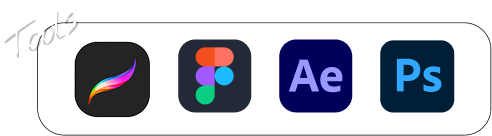
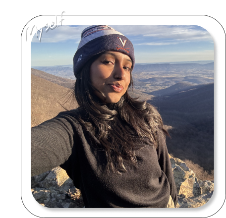
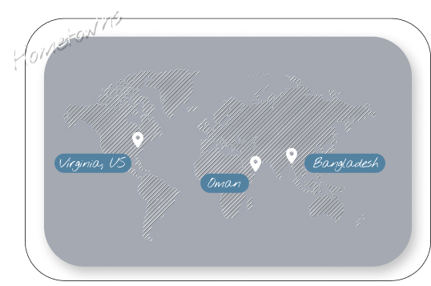

I'm a computer science and studio art double major at UVA working in UI/UX design, programming, and graphic design. I'm interested in how design and code intersect to create clear, intuitive digital experiences.



